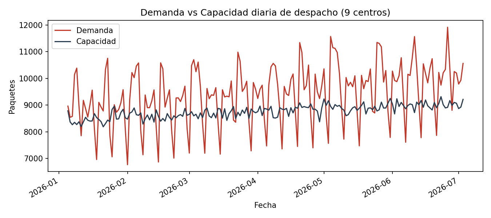

Periodo analizado: 2026-01-05 a 2026-07-03

El centro C07 concentra 36,725 paquetes de déficit (21.3% del total). En días con campaña programada, el déficit medio por registro asciende a 201.8 paquetes frente a 81.7 en días normales.
Priorizar la ampliación de capacidad operativa o la redistribución de rutas hacia el centro C07, reforzando la logística de despacho especialmente durante las jornadas de campañas activas.
Los datos analizados corresponden al periodo de operación y evalúan el déficit de forma independiente por jornada sin acumular rezago de paquetes no entregados para el día siguiente.